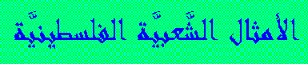

Palestinian Popular Proverbs
KEY:
Capital letters for Arabic strong letters (D,T,...) and double
letters for long vowels (aa,oo,...)
Group 1:
"El-faaDi yekhli lal-malyaan."
The empty gives the way to the full.
"E'mal ma'roof wermi fil-baHar."
Do good and throw it in the sea.
"Ya Haafir jouret el-saww ya waaqe' feeha."
This who digs an evil hole will fall into it.
"Jaarak el-qareeb wala akhook leb-'eed."
Your close neighbor is better than your faraway brother.
"Ed-daar daar aboona wajo el-ghorob yeT-Hoona."
The house is our father's and the strangers came to kick us out.
"LaTHTHaalim yowm methel daqq eththowm."
There will be a day for the opressor when he will be crushed like garlic.
"Laa tishrab min beer o tirmy feeh Hajar."
Do not drink from a well and throw a stone into it.
"Ead waHdha maa betSaffeq."
One hand can't clap.
"Ma beqTa' er-raas illa illy rakkabo."
Nobody will cut a head off except the One who put it on.
"Doqq el-baab qabil ma todkhol."
Nock on the door before entering.
"Ma boHroth el-arD gheir e'joolha."
Nobody will plough the land except its cows.
"El-jaahil 'adoww nafsoh."
The ignorant is his own enemy.
"ES-Sadeeq waqt eD-Deeq."
A friend in need is a friend indeed.
"Illy beHeb maa bekrah."
The one who loves does not hate.
Source:
Barghouthi, A.: "The Role of Folklore in the Process of Socializing
Palestinian Children", Society & Heritage, 24: 19,
al-Bireh, Palestine (July 1994).
Group 2:
"Koll 'ein o elha naTHrah."
Every eye has its look.
"El-'ein mabte'laash 'an el-Haajib."
The eye does not get over the eyebrow.
"El-maktoob 'ala el-jabeen laazem etshoofol 'ein."
Whatever is written on the forehead is always seen.
"El-wejh elly betSabHoh, keef elak 'ein etqabHoh."
You will not dare mistreating the face you see in the morning.
"El-'ein elly btoakel."
The eye is the one that eats.
"ET'am eththim, testHyl 'ein."
If you feed the mouth, the eye becomes shy.
"El-'ein baSeerah wel-eid qaSeerah."
The eye sees, but the hand can't reach.
"Gheeb 'an el-'ein, betgheeb 'an eThThehen."
Away from the eye, away from the mind.
Source:
From the Archive of Popular Proverbs, Society & Heritage,
24: 54, al-Bireh, Palestine (July 1994).
 Go back to the
Palestinian Folklore Home Page
Go back to the
Palestinian Folklore Home Page